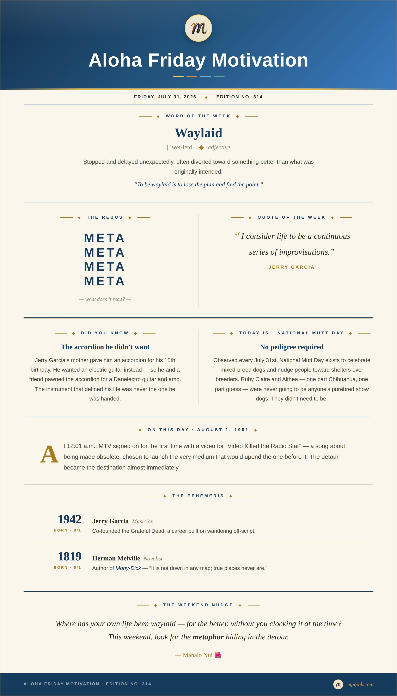

Happy Aloha Friday. 🌺
No microcast this week. Felt like breaking my own golden rule until I remembered what the rule actually is — James Clear's, from Atomic Habits: never miss twice. Missing once is an accident. Missing twice is a new habit. So I'm taking the one miss on purpose, so the newsletter still gets to you today instead of both showing up late.
Also: Edition #314. St. Louis, that number's yours before it's anyone else's. 314 Day is officially March 14th, but shoutout to the Gateway City a few months early.
Weeks ago, Samson opened this trilogy from a lobby in Kauai. Part 2 starts on the Berlin Turnpike. Not exactly Nā Pali. More big-box parking lots and a Chili's.
Tiffany — girlfriend, at the time — had been talking about adopting a dog. I agreed to drive to the Connecticut Humane Society in Newington to go look, which in my head was recon, nothing more — low commitment, high upside, since the whole loop ran the Berlin Turnpike and Ted's steamed cheeseburgers in Meriden were waiting on the way home. I was there for the burger. What I actually walked into was much, much different.
We split up at the kennels. Tiffany took the cats and the little dogs. I took the big ones — I'd never owned anything else. We were lost in a daze of too-cute for over an hour before she came and grabbed my arm.
We rounded a corner. There was this lanky little pup, couldn't have been more than a few months old — Santa's Little Helper meets chihuahua meets German shepherd. Tiffany said, "just wait." A second later, a wet nose slid out from underneath her: Twinkie, we'd learn, to the first pup's Pikachu. Danny DeVito to her Schwarzenegger. Same litter, supposedly — though nobody at the shelter had real paperwork on where they'd actually come from, just "transport, down south." We've spent thirteen years deciding, zero evidence required, that it was the streets of Atlanta. And I've never fully shaken the suspicion that "they're sisters, you can't split up sisters" is just good salesmanship — the two-for-one nobody questions, because it arrives wrapped in sentiment instead of a price tag.
Next thing I know, I'm standing in a waiting room and a worker walks in with a dog in each hand. Tiffany still has the photo she took on her BlackBerry — the exact second I got duped. Recon was now a double adoption. I still got the cheeseburger. I also got an unplanned trip to the pet store for everything two dogs need that we did not, in fact, own.
I'd never had a small dog before Ruby Claire and Althea. Every dog before this had been big — the kind that takes up half a couch and doesn't apologize for it. Small dogs would prove the better bet years later, on a Delta flight, holding Althea over the fold-down baby-changing tray in the lavatory, a pee pad laid across it, coaxing her through her entire bathroom ritual at 30,000 feet. Try that with a dog that doesn't fit in the sink.
Pikachu became Althea. Twinkie became Ruby Claire. Here's the thing about naming a dog after a song: you don't always know why you picked it until years later. Like Samson, both of ours are named for Grateful Dead songs — Ruby Claire's is the deeper cut. She's a minor character in Reuben and Cerise, Robert Hunter's lyric set to Jerry Garcia's melody, off Garcia's 1978 solo record Cats Under the Stars. She shows up dressed in red, catching Reuben's eye across a crowded room: "Sweet Ruby Claire at Reuben stared, she was dressed as pirouette in red, and her hair hung gently down."
The real coincidence isn't the song. It's the timing. I've owed you the rest of this trilogy for weeks now, and I'm only just getting back to it — which happens to land right at the onset of what Deadheads call the Days Between: August 1st, Garcia's birthday, through August 9th, the day he died in 1995. Nine days named for a Garcia and Hunter song that didn't exist until two years before he was gone.
Althea's middle name is Montgomery. We picked it years before we had any reason to end up in Birmingham. Kismet — Samson's word, Part 1, not this week's — but it still fits.
A week later, my employees wanted to meet them, so I brought them into the office — Enterprise, branch 2434, Shelton, CT. That was the deal for the next year: every Friday I worked, the dogs worked too. Lobby was theirs. Counter was mine. Lunch meant the dog park, no exceptions. I have no memory of pitching a single body shop on referral business without two dogs sitting at my feet doing the actual selling. That was also the year we posted the best customer service score in the region. Best customers, too, probably. Ruby Claire and Althea never saw a commission check, but branch 2434 owes them one.
Jerry Garcia turned 15 the day his mother handed him an accordion. He didn't want it. "God, I don't want this accordion, I want an electric guitar," he told her — so he and a friend pawned it for a Danelectro and an amp instead. Wrong instrument, right life. I got in the car for a cheeseburger and came home with a family. That's the whole metaphor, really — the thing you almost missed turning out to be the thing.
The dogs were the detour. Thirteen years later, the detour is the family.
Ruby Claire and Althea turn 13 in a few weeks. Connecticut, then Hawaii — where Althea once slipped her leash on our wedding day and spent an hour running pig paths through the Makaleha mountains while I was sure I'd lost her for good, a story for another time — then Alabama, the actual south, this time, not just a guess about where they started, and back to Connecticut again. We live a town over from that Newington shelter now. Neither of us planned that either. Thirteen years in, they show no signs of slowing down.
Next Friday: Dupree. Alabama.
Weekend Nudge: Where has your own life been waylaid — for the better, without you clocking it at the time?
Mahalo Nui. 🌺
— Matthew
